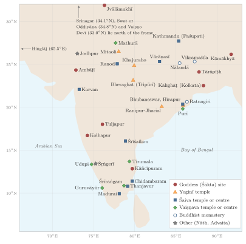

Chapter 13: Tantra in the Regions¶
13.1 Introduction¶
The Tantric scriptures present themselves as universal revelation, but they were practised in particular places, in particular languages and under particular kings. Over the centuries each region of South Asia developed its own Tantric culture: its own manuals and digests, its own hereditary specialists, its own sacred geography and its own relation between Sanskrit ritual and local goddesses, spirits and performers. Much of what is now encountered as “Tantra” — the Kerala temple tantrī, the Bengali Kālī Pūjā, the menstruating goddess of Kāmākhyā, the masked goddesses of Bhaktapur — is regional in this sense.
This chapter surveys Kerala, Bengal, Assam, Odisha, Nepal, the goddess shrines of Kashmir and the north-western hills, Rajasthan and Gujarat, Maharashtra and Karnataka, the Deccan centre of Śrīśailam, and the Tamil country, and ends with the orders of Nātha yogis and Siddhas that moved between all of them. Figure 13.1 locates the principal places named here and in the chapters on the Goddess and on the Śaiva Age. Kashmir, the home of the non-dual Śaiva exegetes, is treated in Chapter 6; the Tamil Śaiva Siddhānta in Chapter 2; the Śrīvidyā of the South in Chapter 5; and Newar Buddhism in Chapter 10. Here the emphasis falls on what is distinctive in each region, with cross-references where a topic is treated elsewhere in the volume. Table 13.1 summarises the comparison.

13.2 Kerala¶
13.2.1 Tantrīs and Temples¶
Kerala has the most fully preserved regional system of Tantric temple ritual outside the Tamil country, and it differs from the Tamil system in important ways. There is no separate caste of Āgamic temple priests corresponding to the Tamil ādiśaivas. Instead, ritual authority over each major temple belongs to a family of Nampūtiri Brahmins who hold the hereditary right (tantram) to be its tantrī. The tantrī performs the great rites — consecration, reconsecration, the annual festival and expiations — and is the final authority on ritual questions; daily worship is performed by other Brahmin priests called śāntis, under a chief priest (mēlśānti) and assistants (kīḻśānti). The family of Ceṉṉās, to which the author of the Tantrasamuccaya belonged, holds the tantram of the Krishna temple at Guruvāyūr; other families hold it for other temples, and a single family may serve many temples (Section 9.9.2).
13.2.2 The Tantrasamuccaya and Its Predecessors¶
The Tantrasamuccaya of Ceṉṉās Nārāyaṇaṉ Nampūtiri (15th century) became the standard authority for Kerala temple ritual. Written in Sanskrit verse, it covers the whole life of a temple for seven deities: the testing and preparation of the site, the making of the image, its installation (pratiṣṭhā), the daily and periodic worship, the annual festival, expiatory rites for the many kinds of pollution and accident that can befall a temple, and renovation (see Chapter 9 for its seven deities and its role in modern disputes). It drew on older Kerala manuals of Śaiva ritual, notably the Prayogamañjarī of Ravi and the encyclopaedic Īśānaśivagurudevapaddhati, probably also of Kerala origin, a compendium in four parts dealing with general matters, mantras, ritual and yoga, which preserves material from older Śaiva scriptures, some now lost. Through these manuals the Siddhānta ritual system was adapted to Kerala’s distinctive temple architecture and to its Nampūtiri priesthood.
13.2.3 Distinctive Features of Kerala Ritual¶
Kerala temples have a characteristic layout: the shrine stands within a square cloister (nālambalam), around which are set the stones (balikkal) that represent the deity’s attendants and the guardians of the directions. Several times a day, in the rite called śrībhūtabali, a priest carries a portable image or a metal plate bearing the deity’s form (tiṭampu) around the shrine, while another offers cooked rice to each of these stones, so that the whole retinue of the deity is fed. Daily worship is divided into a series of services from before dawn to night. The annual festival (utsavam) opens with the hoisting of the flag on the temple’s flagstaff (koṭiyēṟṟam) and closes with the ritual bath of the deity in a river or tank (āṟāṭṭu); in between, the deity is carried in procession, in central Kerala often on caparisoned elephants with the tiṭampu mounted on the leading animal. Gilles Tarabout’s study of Kerala temple festivals shows how these Āgamic rites interlock with the performances and offerings of many non-Brahmin communities (Tarabout 1986).
13.2.4 The Goddess in Kerala¶
Alongside the Brahmin temple ritual, Kerala has rich traditions of goddess worship performed by non-Brahmin specialists. Bhadrakālī, the fierce goddess who in Kerala myth slays the demon Dārika, is worshipped in temples and sacred groves (kāvu) and in two forms of ritual art. In kaḷameḻuttu large floor drawings of the goddess are made in powders of five colours, prepared from rice flour, turmeric, burnt husk, green leaves and a red mixture of turmeric and lime; the drawing is worshipped with songs and lamps through the night and then ritually erased. Muṭiyēṟṟu, a ritual dance-drama performed in Bhadrakālī temples of central Kerala after the harvest, enacts the goddess’s battle with Dārika; it was inscribed on UNESCO’s Representative List of the Intangible Cultural Heritage of Humanity in 2010.
Sarah Caldwell’s ethnography of Muṭiyēṟṟu shows how its performers, who embody the goddess, combine Tantric ideas of power with local understandings of heat, anger and female sexuality (Caldwell 1999). In North Kerala, teyyam performers of low-status communities embody goddesses and heroes in the same way (Section 4.7). Kerala also had a strong tradition of mantravāda, protective and exorcistic rites practised by both Brahmin and non-Brahmin families with manuals in Sanskrit and Malayalam.
13.2.5 Caste and Access¶
The Nampūtiri monopoly of temple ritual was bound up with one of the most rigid caste orders in India, in which many communities could not enter or even approach temples. The Vaikom Satyagraha of 1924–25, for the right to use the roads around the Vaikom temple, the Guruvāyūr Satyagraha of 1931–32 and the Travancore Temple Entry Proclamation of 1936 were landmarks in the struggle for access. In 1888 the reformer Nārāyaṇa Guru consecrated an image of Śiva at Aruvippuram, challenging the Brahmin claim to an exclusive right to perform consecration. In 2017 the Travancore Devaswom Board appointed non-Brahmin priests, including Dalits, to its temples after a qualifying examination in the ritual system — a development that, like the Tamil Nadu legislation discussed in Section 11.10, turns on who may be trained in the Āgamic tradition.
13.3 Bengal¶
Bengal’s prominence in modern images of Tantra has a history. In the Buddhist period under the Pālas it was a centre of Tantric Buddhism (Chapter 10); from the sixteenth century it became the home of a distinctive Śākta culture in which learned digests, vernacular poetry, zamīndār patronage and village goddess worship were closely interwoven. The cult of Kālī, the Tantric Vaiṣṇavism of the Sahajiyās and Bāuls, and the nineteenth-century encounter with colonial critics are treated in Chapters 4, 3 and 14.
13.3.1 The Digests¶
The Bengali Tantric tradition is above all a tradition of compilation. Its authors collected passages from older Tantras, many of which survive only in these quotations, and arranged them as practical handbooks for initiates. Brahmānanda Giri (16th century) wrote the Śāktānandataraṅgiṇī, a manual of Śākta practice, and the Tārārahasya on the worship of Tārā. Pūrṇānanda, by tradition his pupil, completed the Śrītattvacintāmaṇi in 1577; its sixth chapter, the Ṣaṭcakranirūpaṇa, is the source of the modern six-cakra system through Arthur Avalon’s The Serpent Power (Avalon 1919). Kṛṣṇānanda Āgamavāgīśa of Navadvīpa (late 16th or 17th century) compiled the Tantrasāra, a large compendium of the mantras, meditations and worship of the principal deities, which became the standard ritual handbook of Bengali Śāktas and remains in print (McDaniel 2004).
These works are learned, Brahmanical and, for the most part, right-handed in their public prescriptions; they present the Kaula rites, where they include them, within a framework of initiation and qualification.
13.3.2 Pīṭhas, Poets and Patrons¶
Bengal developed a dense sacred geography of goddess sites. Late lists of the fifty-one śāktapīṭhas, such as the Pīṭhanirṇaya, place a large number in Bengal and its borderlands, each with its goddess and her guardian Bhairava (Sircar 1973). Tārāpīṭh in Birbhum, with its cremation ground, became famous through the ascetic Vāmākṣepā (Bāmākhepā, 1837–1911), whose eccentric devotion to Tārā made him the model of the “mad” saint of Bengali Śāktism (McDaniel 2004).
Vernacular narrative poetry carried the goddesses to a wide audience. The maṅgalkābyas, long Bengali poems in praise of a deity, include Mukundarām Cakrabartī’s Caṇḍīmaṅgal (late 16th century), and Bhāratcandra Rāy’s Annadāmaṅgal (1752–53), written at the court of Mahārājā Kṛṣṇacandra of Nadia (r. 1728–1782). Kṛṣṇacandra, the patron also of Rāmprasād Sen, is remembered as a promoter of Kālī and Jagaddhātrī worship. In the eighteenth century, as Rachel McDermott and June McDaniel have described, the goddess worship of the landholding elite and the devotional songs of Rāmprasād transformed the fierce Kālī of the Tantras into a mother to be loved (Section 4.11) (McDermott 2001; McDaniel 2004).
13.4 Assam¶
13.4.1 Kāmarūpa in Tantric Geography¶
Kāmarūpa, the ancient name of western Assam, appears in early Kaula texts as one of the four principal seats of the Goddess (Section 4.4), and its temple of Kāmākhyā is today the most famous of the pīṭhas. On the Nīlācala hill around the main temple stand shrines of the ten Mahāvidyās, so that the hill as a whole forms a map of the later Śākta pantheon (Section 4.3).
13.4.2 The Kālikā Purāṇa and the Yoginī Tantra¶
Two texts above all express the Tantric culture of Assam. The Kālikā Purāṇa (c. 10th–11th century), an upapurāṇa composed in the region, tells the story of Kāmākhyā, describes the sacred geography of Kāmarūpa, and gives detailed rules for goddess worship, including the worship of the Goddess by kings and the rules of blood sacrifice. Its chapter on blood offerings, translated into English at the end of the eighteenth century in the journal Asiatick Researches, became one of the most cited texts in colonial descriptions of Hindu “barbarism” and a staple of later polemics. The Yoginī Tantra (c. 16th–17th century) glorifies Kāmarūpa as the supreme sacred land, describes its pīṭhas and rivers, and includes legendary accounts of the region’s rulers (Urban 2010).
13.4.3 Kings, Priests and Their Critics¶
Kāmākhyā’s history is closely tied to royal power. The present temple was rebuilt in the sixteenth century under the Koch king Naranārāyaṇa, and its cult was later patronised by the Ahom kings. The Ahom kings, originally Tai rulers with their own religion, increasingly adopted Śākta Hinduism. Rudra Siṃha (r. 1696–1714) invited a Bengali Śākta Brahmin, Kṛṣṇarām Bhaṭṭācārya of Nadia, to his court, and under his son Śiva Siṃha (r. 1714–1744) the priest’s family received charge of the Nīlācala temples; their descendants were known as the “mountain” (Parbatiyā) Gosāīs. Śiva Siṃha’s queen Phuleśvarī, who governed in his name, is remembered in the Assamese chronicles for compelling the heads of Vaiṣṇava monasteries to take part in Śākta rites, a grievance that contributed to later unrest (Urban 2010).
The tensions had deep roots. In the late fifteenth and sixteenth centuries the Assamese saint Śaṅkaradeva (traditional dates 1449–1568) had founded a Vaiṣṇava devotional movement, the ekasaraṇa dharma (“religion of refuge in the One”), which rejected the worship of other deities and the blood sacrifices of the Śāktas, and organised its followers around monasteries (satras) and village prayer halls. Assam thus offers an unusually clear case of a devotional critique of Tantric goddess worship, institutionalised and sustained over centuries. Kāmākhyā itself remains a centre of living Śākta practice, with daily animal sacrifice and the annual Ambubācī festival, which now draws very large numbers of pilgrims and ascetics.
13.5 Odisha¶
13.5.1 Śaiva and Śākta Bhubaneswar¶
Odisha preserves a remarkable sequence of early medieval monuments that document the Tantric traditions in stone. At Bhubaneswar the Paraśurāmeśvara temple (c. 7th century) carries images of Lakulīśa, the founder of the Pāśupatas (Section 2.1.6). The Vaitāl Deul (8th century), with its barrel-vaulted roof, is a temple of the Goddess as Cāmuṇḍā: its sanctum image shows the emaciated goddess seated on a corpse, and its walls carry fierce mātṛkās and Bhairava forms. Odisha also has two of the finest yoginī temples, at Hirapur near Bhubaneswar and Ranipur-Jharial in the west (Section 4.10).
13.5.2 Buddhist Tantra in Odisha¶
The monasteries of Ratnagiri, Lalitagiri and Udayagiri, in the Jajpur and Cuttack districts, flourished from about the seventh to the twelfth century, and Ratnagiri in particular has yielded a large body of Vajrayāna sculpture. Some scholars have identified Odisha with Oḍḍiyāna, the land celebrated in Buddhist Tantric literature as a source of revelation; most now locate Oḍḍiyāna in the Swat valley of present-day Pakistan, but the debate illustrates how important Odisha was to the eastern Indian Buddhist world (Davidson 2002).
13.5.3 Jagannātha and the Goddess¶
The cult of Jagannātha at Purī, which became the state cult of the Gaṅga and Gajapati kings, is primarily Vaiṣṇava, but it has strong Tantric and tribal elements (Eschmann et al. 1978). The wooden images are periodically replaced in the rite of navakalevara (“new body”), in which the sacred substance believed to dwell in the old image is transferred secretly to the new one by the daitās, servitors who trace their descent from the tribal Śabaras credited in the temple’s legend with first worshipping the god. The goddess Vimalā has a shrine within the temple compound; food offered to Jagannātha becomes the sacred mahāprasāda only after it has also been offered to her, and Purī appears in the Śākta lists of pīṭhas, with Jagannātha as the guardian Bhairava of the Goddess. Parts of the temple’s daily and festival liturgy, too, follow Tantric patterns of nyāsa, mantra and worship.
The essays collected by Anncharlott Eschmann, Hermann Kulke and Gaya Charan Tripathi showed how a tribal deity was progressively “Hinduised” and made the centre of a regional state; its political dimension is discussed in Volume 18, Rājanīti and Dharmaśāstra.
13.5.4 Vernacular Mysticism and Its Critics¶
In the sixteenth century five Odia poets, remembered as the Pañcasakhā (“five friends”) — Balārāma Dāsa, Jagannātha Dāsa, Acyutānanda Dāsa, Ananta Dāsa and Yaśovanta Dāsa — created a body of devotional and esoteric literature in Odia. Jagannātha Dāsa’s Odia rendering of the Bhāgavata Purāṇa became the most widely read religious book in the region. Alongside their devotion to Jagannātha, several of these poets taught a yoga of the body and a doctrine of the “void” (śūnya) as the ultimate reality, ideas that scholars have related to the region’s older Tantric Buddhist and Nāth traditions. In the nineteenth century the Mahimā Dharma, founded by Mahimā Gosāī and given voice by the poet Bhīma Bhoi, went further: it rejected image worship, the authority of the Brahmin priesthood and, explicitly, the worship of Jagannātha, in favour of devotion to a formless absolute. Odisha thus shows, within a single region, the full range from state-sponsored temple Tantra to its esoteric reinterpretation and its outright rejection.
13.6 Nepal¶
The Kathmandu Valley is the one region of South Asia where the Śaiva, Śākta and Buddhist Tantric traditions of early medieval India have survived continuously in the practice of a single urban society, that of the Newars. Its royal goddess Taleju, the cult of the living Kumārī and the Kubjikā tradition are introduced in Section 4.7, and Newar Buddhism in Section 10.17.
13.6.1 Paśupati and the Śaiva Kingdom¶
The temple of Paśupati near Kathmandu has been the principal Śaiva shrine of Nepal since at least the Licchavi period, when kings described themselves in their inscriptions as favoured by the god (Section 12.3). By long-standing custom its chief priests are Brahmins from South India, from Karnataka, rather than local Brahmins. The adjacent shrine of Guhyeśvarī, regarded as a pīṭha of the Goddess, makes the site a meeting place of Śaiva and Śākta worship.
13.6.2 Secret Shrines and Lineage Deities¶
Among the Newars, Tantric initiation is a family and caste matter. High-caste Hindu Newars, served by Rājopādhyāya Brahmins and Karmācārya Tantric priests, receive initiation into the worship of a lineage deity — often a form of the Goddess — whose image is kept in a secret shrine, the āgaṃ (from āgama), which only initiated members of the lineage may enter. Buddhist Newars have equivalent āgaṃ shrines of Cakrasaṃvara and Vajravārāhī, served by Vajrācārya priests. The public face of temple worship and the esoteric face of the lineage shrine thus coexist within the same households (Gellner 1992; Levy 1990).
13.6.3 The Navadurgā of Bhaktapur¶
Robert Levy’s study of Bhaktapur showed how an entire city could be organised as a Tantric “mesocosm”, a structured world mediating between the individual and the cosmos. The city’s boundaries are guarded by shrines of the eight mother goddesses (aṣṭamātṛkā) set around it in the directions, with a ninth at the centre, so that the city is laid out as a maṇḍala. Each year a troupe of masked dancers from a caste of gardeners embodies the Navadurgā — nine goddesses with Gaṇeśa, Bhairava and other figures — and tours the city, receiving offerings, including blood offerings, and performing dramas. The masks are made anew each year and, at the end of the cycle, ritually disposed of, as if the goddesses had lived a life and died (Levy 1990).
13.6.4 Kubjikā and the Survival of Texts¶
The Western Transmission of the hunchbacked goddess Kubjikā (Section 4.11), almost extinct in India, survives in Newar initiatory practice, and its scriptures are preserved in Nepalese manuscripts. Mark Dyczkowski’s study of the Kubjikā corpus showed how these texts reorganised earlier Śaiva and Kaula material into a new system with its own yoga, mantras and ritual (Dyczkowski 1988). Nepal’s libraries, which preserve the oldest manuscripts of the Niśvāsa, the Brahmayāmala and many other Tantras (Section 1.7), have made the Valley the single most important source for the recovery of the early Tantric literature.
13.7 Kashmir and the North-western Hills¶
The philosophy and ritual of the Kashmiri Śaivas are treated in Chapter 6. Less often noticed are the goddess shrines of Kashmir and the neighbouring hills, which give the Śākta side of the region’s Tantric culture a living geography.
Kashmir. Three goddess sites have been central to Kashmiri Pandit religion. On the hill of Hari Parbat in Srinagar the goddess Śārikā is worshipped in the form of a rock regarded as a self-manifested Śrīcakra. At Tulamulla, the goddess Rāgñā (Khīr Bhavānī) is worshipped at a spring whose changing colours are read as omens. Farther north, in the Neelum valley in Pakistan-administered Kashmir, lie the ruins of the temple of Śāradā, a renowned seat of the Goddess and of learning, after whom the Śāradā script of Kashmir is named. Kashmiri Pandit families continue to worship these goddesses with rites that draw on the Tantric literature of the Valley, and the annual festival at Tulamulla has become a focus of the displaced Pandit community since 1990.
The hills of Jammu, Himachal and Punjab. A circuit of goddess shrines in the Siwalik hills — among them Vaiṣṇo Devī near Jammu, Jvālāmukhī with its natural flames, Kangra’s Vajreśvarī, Cintapūrṇī and Nainā Devī — draws millions of pilgrims from northern India. At Vaiṣṇo Devī the goddess is worshipped in a cave as three natural rock forms (piṇḍīs) identified with Mahākālī, Mahālakṣmī and Mahāsarasvatī, the three forms of the Devīmāhātmya. Kathleen Erndl’s study of these cults showed how a Śākta theology derived from the Devīmāhātmya and the pīṭha myths combines with popular practices such as possession by the goddess (khelnā, “playing”), most often experienced by women, which gives them a religious authority otherwise rarely available to them (Erndl 1993). Most of this worship is vegetarian and Vaiṣṇava in tone, though some shrines retained animal sacrifice; the Tantric element lies less in Kaula ritual than in the shared vocabulary of pīṭha, śakti and the Goddess’s power to enter and act through human bodies.
13.8 Rajasthan and Gujarat¶
In western India Tantric religion took two characteristic forms: the cult of lineage goddesses closely tied to Rajput kingship, and the patronage of Nāth yogis.
13.8.1 Lineage Goddesses and Their Shrines¶
Each Rajput clan honours a lineage goddess (kuladevī) as the protector of its land and rule, worshipped at the clan’s principal shrine and in the household, above all at Navarātri. Lindsey Harlan’s study of Rajput women showed how this goddess, who protects the lineage in war, is also the model and guardian of the women who maintain the household’s ritual life (Harlan 1992). Several goddess shrines of the region are distinctive. Karṇī Mātā at Deshnok near Bikaner, a deified woman of the Cāraṇ community of bards, is the patron goddess of the Rāṭhōṛ rulers of Bikaner; her temple is famous for the rats that live in it, which are regarded as members of her family. Śilā Devī, the goddess of the Kachvāhā rulers of Amber, is said to have been brought from eastern Bengal by Mān Siṃh I about 1600, together with Bengali priests — an instance of the movement of Tantric specialists between regions. Ambājī, in the Aravalli hills on the Gujarat–Rajasthan border, one of the great goddess shrines of western India, has no anthropomorphic image in its sanctum: a yantra is worshipped in its place. And Bahucarā Mātā, near Mehsana in Gujarat, is the patron goddess of the hijrā communities, whose members regard their renunciation of male identity as service to her.
13.8.2 The Nāths at Jodhpur¶
The Nāth yogis (Section 13.12) were influential at several Rajput courts. At Jodhpur, Mahārājā Mān Siṃh (r. 1803–1843), who believed he owed his throne to the prophecy of a Nāth guru, made the Nāths the dominant religious power of his kingdom, building their monastery (Mahāmandir) and granting them great estates. The court painters he patronised produced a remarkable series of paintings of Nāth cosmology, yoga and hagiography, including images of the absolute as a field of pure colour, which are among the most original works of Indian Tantric art (Diamond et al. 2008). After Mān Siṃh’s death the Nāths’ power was curtailed, under British pressure, by his successor.
13.9 Maharashtra and Karnataka¶
The western Deccan has no single Tantric scripture of its own, but it shows with unusual clarity how Nātha yoga, goddess worship and Āgamic temple ritual were absorbed into regional devotional religion.
13.9.1 Nāthas, Dattātreya and the Marathi Saints¶
The Marathi devotional tradition traces its origin to the Nāthas. Jñāneśvar (Jñānadev), whose Marathi commentary on the Bhagavadgītā, the Jñāneśvarī, is dated 1290, gives his own lineage at its close as running from Ādinātha through Matsyendranātha and Gorakṣanātha to Gahinīnātha, and from him to his elder brother and guru Nivṛttinātha. In its sixth chapter, on meditation, the work describes the awakening of kuṇḍalinī and its ascent through the body in some of the most celebrated passages of Marathi literature. Yet the same poet became the founding figure of the Vārkarī devotion to Viṭhṭhal of Pandharpur, which values the singing of the divine name above yogic technique; the Nātha inheritance was thus remembered as a lineage and reinterpreted as devotion (see Volume 8, Kāvya Kalpalatā, for the poetry).
A second strand is the cult of Dattātreya, the ascetic sage regarded as a combined form of Brahmā, Viṣṇu and Śiva and as the guru of gurus. Dattātreya appears in the Purāṇas as a teacher of yoga who behaves like an intoxicated, unconventional avadhūta and enjoys wine and women without being touched by them — a figure with clear affinities to the Tantric adept. He was claimed by the Nāthas, by the Mahānubhāvas founded by Cakradhar in the thirteenth century, and by the Datta tradition proper, whose Gurucaritra recounts the lives of the saints Śrīpāda Śrīvallabha and Narasiṃha Sarasvatī, the latter associated with the pilgrimage centre of Gāṇagāpur. A haṭha-yoga text, the Dattātreyayogaśāstra (Section 13.12), is presented as his teaching. Antonio Rigopoulos has traced how the unconventional yogin of the early sources became the gentle, three-headed guru of modern Maharashtrian devotion (Rigopoulos 1998).
13.9.2 The Goddesses of the Western Deccan¶
Maharashtrian tradition counts “three and a half” seats of the Goddess: Mahālakṣmī (Ambābāī) at Kolhapur, Bhavānī at Tuljapur, Reṇukā at Mahur, and, as the “half” seat, Saptaśṛṅgī at Vani. Tuljapur’s role as the lineage goddess of Śivājī is discussed in Section 12.5. Their worship includes the gondhaḷ, an all-night ritual performance of songs and narratives for the goddess (see Volume 9, Saṅgīta–Nāṭya), and the offerings of hereditary priests rather than the elaborate Āgamic liturgy of the Tamil temples.
The goddess Reṇukā, worshipped as Yellamma at Saundatti in northern Karnataka, shows both the power and the social cost of such cults. Her myth makes her the mother of Paraśurāma, beheaded at the command of her husband Jamadagni and restored to life, and she is often worshipped in the form of a head. Her cult was long associated with the dedication of girls, mostly of Dalit families, as jogatis or devadāsīs, bound to the goddess and frequently drawn into sexual exploitation. Karnataka prohibited such dedication by law in 1982, and Maharashtra later passed similar legislation, but reports of continuing dedications show that law alone has not ended the practice. The case belongs to the wider history of temple women and its abolition (Section 11.10.3).
13.9.3 Karnataka: Monasteries and the Udupi Rotation¶
Karnataka was the home of the Kālāmukha monasteries and of the Vīraśaivas, whose rejection of temple ritual was described in Chapter 2. It also produced a distinctive Vaiṣṇava ritual tradition. Madhva (c. 1238–1317; traditionally 1199–1278), the founder of the dualist (Dvaita) school of Vedānta, wrote a ritual digest, the Tantrasārasaṅgraha, which regulates mantra, worship and temple ritual for his followers, and he installed the image of Kṛṣṇa at Udupi. The worship there has been conducted ever since by the heads of eight monasteries in rotation (paryāya), each now holding office for two years (a period fixed, according to tradition, in the sixteenth century), so that a group of renunciant śāstric scholars rather than a hereditary priestly caste controls the temple ritual. On the coast, the same region preserves the worship of bhūtas, local spirit-deities who are embodied by non-Brahmin performers in the night-long bhūta kola, alongside the Brahmanical temples — another instance of the coexistence of learned and local religion observed in Kerala and Odisha.
13.10 Andhra and the Deccan: Śrīśailam¶
Śrīśailam (Śrīparvata), in the forested hills above the Krishna river, is one of the oldest and most varied Tantric centres of the Deccan. Its temple of Mallikārjuna is one of the twelve jyotirliṅgas of Śiva, and its goddess Bhramarāmbā is counted among the Śākta pīṭhas. Literary sources associate the mountain with Kāpālikas and other Tantric adepts: in Bhavabhūti’s Mālatīmādhava, for instance, the female adept Saudāminī has gained her powers at Śrīparvata (Section 2.1.6). Later tradition made it a haunt of Siddhas and alchemists, and legends of the alchemist Nāgārjuna (distinct from the Buddhist philosopher) were attached to the region. In the later medieval period it became a major Vīraśaiva centre, one of the five seats (pīṭhas) of the Vīraśaiva teachers, and it received the patronage of the Kākatīyas, Reḍḍis and Vijayanagara kings. The Golakī foundation at Malkāpuram (Section 12.6) lay in the same region of the Krishna valley.
| Region | Key texts | Specialists | Distinctive features |
|---|---|---|---|
| Kerala | Tantrasamuccaya; Īśānaśivagurudevapaddhati | Nampūtiri tantrīs and śāntis; non-Brahmin performers | Śrībhūtabali; Bhadrakālī cults; kaḷam and muṭiyēṟṟu |
| Bengal | Tantrasāra; Śrītattvacintāmaṇi; maṅgalkābyas | Brahmin gurus; cremation-ground ascetics | Digest culture; Kālī and Tārā; zamīndār patronage; devotional song |
| Assam | Kālikā Purāṇa; Yoginī Tantra | Kāmākhyā priests | Menstruating goddess; sacrifice; Vaiṣṇava counter-movement |
| Odisha | Temple literature; Odia works of the Pañcasakhā | Temple servitors, including daitās | Yoginī and Cāmuṇḍā temples; Buddhist monasteries; Jagannātha and Vimalā |
| Nepal | Nepalese manuscripts of early Tantras; Kubjikā texts | Rājopādhyāyas, Karmācāryas, Vajrācāryas | Secret lineage shrines; Kumārī; Navadurgā |
| Kashmir and NW hills | Devīmāhātmya; pīṭha myths | Pandit family priests; shrine priests | Śārikā as Śrīcakra; possession by the Goddess |
| Rajasthan, Gujarat | Purāṇic and local goddess literature; Nāth texts | Temple priests; bards; Nāth yogis | Lineage goddesses of kings; yantra worship at Ambājī; Nāth court art |
| Maharashtra, Karnataka | Jñāneśvarī; Gurucaritra; Madhva’s Tantrasārasaṅgraha | Hereditary shrine priests; Udupi monastery heads; bhūta performers | Nātha lineage absorbed into devotion; Dattātreya; goddess seats; paryāya |
| Tamil country | Tirumantiram; Siddhānta canon | Ādiśaivas; ātīṉam ascetics; Siddhas | Tamil devotion joined to Āgamic ritual |
13.11 The Tamil Country: The Tirumantiram and the Siddhas¶
The Tamil Śaiva Siddhānta, the Nāyaṉmārs and the later Siddha poets are treated in Chapter 2 and below. One text, however, stands between Sanskrit Tantra and Tamil devotion and deserves separate notice: the Tirumantiram (“Sacred Mantra”), ascribed to Tirumūlar and placed as the tenth book of the Śaiva canon, the Tirumuṟai (Zvelebil 1975).
The legend and the date. According to the Periyapurāṇam, Tirumūlar was a yogi from Kailāsa who, travelling in the Tamil country, entered the body of a dead cowherd named Mūlaṉ out of pity for his grieving cows, and remained in it to compose the work, at the rate of one verse a year. Tradition therefore makes the text very old. Modern estimates range from about the sixth to the twelfth century. The work’s familiarity with developed Tantric doctrine — the Āgamas by name, the categories of the Siddhānta, a yoga of cakras and kuṇḍalinī, diagrams made of syllables, and the worship of a goddess in forms close to those of the Śākta Tantras — has led many scholars to favour a date late in this range, and the text as we have it may be composite (Zvelebil 1975).
Contents. The Tirumantiram consists of about three thousand quatrains in nine books (tantiram), a structure that itself recalls the Sanskrit scriptures. It treats Śiva, souls and bonds; morality and the dangers of attachment; a yoga of eight limbs that includes breath control and the raising of inner power; mantras and their diagrams (cakkaram); the grace of Śiva and the guru; and the states of the liberated. Several of its verses are among the most quoted in Tamil religious literature. One declares that love and Śiva are not two; another, that those who let the body perish lose the soul as well, and that the poet learnt to preserve the body and so preserved the soul; another, that the heart is the great shrine and the body of flesh the temple; and a much-quoted line proclaims that humanity is one family and God is one.
Significance. The Tirumantiram shows that the Sanskrit Tantric world view — initiation, mantra, yoga of the subtle body, the identification of body and temple — was rendered into Tamil verse and absorbed into the Tamil Śaiva canon. It became an authority both for the Siddhānta theologians and for the Siddha poets who rejected temple ritual, and it remains a point of reference for modern Tamil Śaivism.
13.11.1 The Tamil Siddhas¶
The Tamil country has its own tradition of cittar (from Sanskrit siddha), poet-yogis whose verses are among the most radical in Indian religious literature. Tradition counts eighteen Siddhas (patiṉeṇ cittar), but the lists differ, and the poems collected under the names of figures such as Civavākkiyar, Pāmpāṭṭi Cittar, Iṭaikkāṭar, Akappēy Cittar and Paṭṭiṉattār are difficult to date; most are probably late medieval or early modern, though Tirumūlar’s Tirumantiram is often regarded as their precursor (Zvelebil 1973).
Written in plain, colloquial Tamil, the Siddha poems ridicule image worship, temple ritual, pilgrimage, the authority of the Vedas and the claims of caste and of the Brahmin priesthood, and they locate the divine within the body, to be realised through yoga, breath control and the raising of kuṇḍalinī. Many Siddhas are also credited with alchemy and medicine. The Tamil Siddha system of medicine (citta maruttuvam), now one of the officially recognised systems of medicine in India, traces itself to them and uses mineral and metallic as well as herbal preparations, and legend credits the Siddha Pōkar with making the image of Murukaṉ at Paḻaṉi. The Siddhas thus share the Nāthas’ concern with the perfected body, while their critique of caste and ritual recalls that of the Vīraśaiva poets (Section 2.10). The safety note in Section 13.12.2 applies equally to Siddha mineral preparations.
13.12 Orders across the Regions: The Nātha Yogis¶
The Nātha or Kānphatā yogis, who trace their lineage to Matsyendranātha and Gorakṣanātha (probably 11th–13th centuries), are an order of Śaiva ascetics whose traditions bridge Kaula Tantra and haṭha yoga. Matsyendranātha is honoured as the founder of a Kaula tradition, and a Kaulajñānanirṇaya is ascribed to him. The Nāthas became the principal exponents of haṭha yoga, with its techniques of posture, breath control, “seals” (mudrās) and “locks” (bandhas) aimed at the raising of kuṇḍalinī and the preservation of vital fluid, and with a goal of bodily immortality and powers. Recent research has shown, however, that the earliest haṭha texts, such as the Amṛtasiddhi (11th century) and the Dattātreyayogaśāstra (13th century), arose in Buddhist and Vaiṣṇava as well as Śaiva milieus; the Haṭhapradīpikā of Svātmārāma (15th century) compiled these earlier teachings (Mallinson and Singleton 2017); see Volume 5, Yoga Taraṅgiṇī, for haṭha yoga itself. The Nāthas were open to men of all castes and attracted a large popular following, and the lists of the “nine Nāthas” vary from region to region.
13.12.1 Nāthas, Sufis and Sants¶
From the thirteenth century the Nāthas were among the most visible religious figures of North India, and their ideas crossed religious boundaries. A treatise on yoga called the Amṛtakuṇḍa (“Pool of Nectar”), now lost in its original form, was translated into Arabic and Persian; the Persian version, the Baḥr al-ḥayāt (“Ocean of Life”) of the Shaṭṭārī Sufi Muḥammad Ghawth Gwāliyārī (d. 1563), describes yogic postures, breath control and the recitation of mantras alongside the Sufi practice of remembrance (dhikr). Carl Ernst has shown how these translations recast yoga in Islamic terms while preserving much of its technical content (Ernst 2003). In the same milieu the songs of Kabīr and other Sants drew on Nātha vocabulary — the “unstruck” sound, the central channel, the inner nectar — while rejecting the ritual of both Hindus and Muslims, and Nāth yogis appear frequently in Persian chronicles and in Mughal painting. These exchanges are a reminder that the yogic and Tantric traditions were never confined to a single religious community.
The Sikh scripture preserves the most direct record of such an exchange. The Siddh Goṣṭ (“Discourse with the Siddhas”), a long composition of Guru Nānak (1469–1539) in the section of the Ādi Granth devoted to the rāga Rāmkalī, presents a dialogue in verse between Nānak and Nāth yogis, in which the yogis question him about his path and he answers that liberation comes not from the yogi’s earrings, ash, patched coat and bodily disciplines, nor from withdrawal from the world, but from the divine Name and the Word received through the Guru, by one who lives as a householder. Nānak’s hymns elsewhere take over and reinterpret Nāth vocabulary — the “unstruck” sound, the “tenth door” at the crown of the head, the “innate” state (sahaj). W.H. McLeod showed how the Nāth tradition formed both the background and the foil of Nānak’s teaching (McLeod 1968); the Sikh tradition as a whole lies outside the scope of this volume.
13.12.2 Tantra and Alchemy¶
Indian alchemy (rasaśāstra, “the science of mercury”) developed in close association with the Tantric and Nātha traditions from about the tenth century. Works such as the Rasahṛdayatantra of Govinda and the Rasārṇava present alchemy as a path to liberation in a perfected, immortal body: mercury is identified with the semen of Śiva and sulphur with the menstrual blood of the Goddess, and the alchemist’s “killing” and “binding” of mercury parallels the yogin’s mastery of breath and seed. David Gordon White has described this “alchemical body” as a meeting point of Tantra, haṭha yoga and medicine (White 1996). Rasaśāstra later became part of Āyurvedic pharmacy, where mercurial and other metallic preparations (bhasmas) are still made.
Health and Safety Note
Classical alchemical and rasaśāstra preparations contain mercury, lead, arsenic and other toxic metals. Studies of Āyurvedic products sold in the United States and over the internet found detectable heavy metals in about a fifth of those tested, in some cases at levels exceeding safety limits, and products containing rasa ingredients were especially likely to be contaminated (Saper et al. 2004, 2008). No recipe in the alchemical texts should be prepared or taken; the account here is historical only.
13.13 Regional Patterns¶
Table 13.1 compares the regional traditions surveyed in this chapter.
Four patterns stand out. First, everywhere the Sanskrit Tantric system was adapted to a regional priesthood and to regional kings: the Nampūtiri tantrī, the Bengali digest-writer, the Kāmākhyā priest and the Newar Rājopādhyāya are all local specialists in a pan-Indian discipline. Second, in every region learned Tantric ritual coexists with non-Brahmin performers and local deities — teyyam and muṭiyēṟṟu dancers, the daitās of Purī, the masked Navadurgā — who embody the gods in ways the Sanskrit texts only partly control. Third, regional traditions generated their own critics: the Ekasaraṇa movement of Assam, the Bengali Vaiṣṇavas, the Tamil Siddhas and the modern temple-entry movements of Kerala all contested the claims of Tantric ritual specialists. Fourth, the regions were never sealed off from each other: Nātha yogis, Siddhas, Śaiva preceptors and Bengali priests carried texts, practices and deities between them, and a goddess or a lineage could travel from one end of the subcontinent to the other.